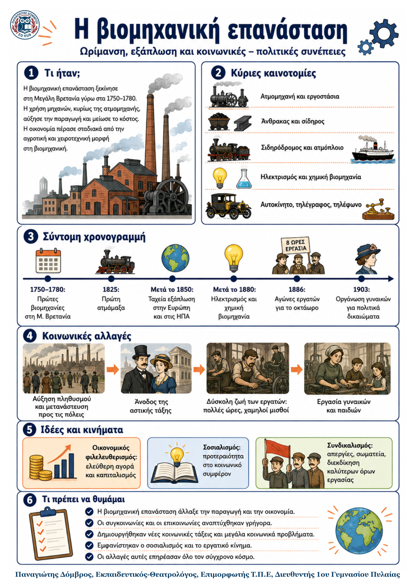

Δεν βρέθηκε η λέξη ή η φράση μέσα στην ενότητα.
1Η βασική ιδέα
2Ιστορικό πλαίσιο
Οι πρώτες βιομηχανίες δημιουργήθηκαν στη Μεγάλη Βρετανία. Κύριοι κλάδοι ήταν η υφαντουργία και η μεταλλουργία.
Στα μέσα του 19ου αιώνα η εκβιομηχάνιση είχε φτάσει σε περιοχές της δυτικής Ευρώπης και της βόρειας Ιταλίας.
Από τα μέσα του αιώνα εξαπλώθηκε γρήγορα σε νέες ευρωπαϊκές περιοχές και στις ΗΠΑ.
Μετά το 1880 η επιστημονική έρευνα συνδέθηκε στενά με τη χημεία, τον ηλεκτρισμό και τη μαζική παραγωγή.
3Από την τεχνική αλλαγή στη νέα οικονομία
| Νέα μέσα και ενέργεια | Εργοστάσια και παραγωγή | Μεταφορές και αγορά |
|---|---|---|
| Ατμομηχανή, άνθρακας, αργότερα ηλεκτρισμός και πετρέλαιο. | Συγκέντρωση εργατών, μηχανική παραγωγή, περισσότερα και φθηνότερα προϊόντα. | Σιδηρόδρομος, ατμόπλοιο και τηλεπικοινωνίες συνέδεσαν μακρινές περιοχές. |
4Τα κύρια σημεία: τεχνολογία, μεταφορές και οικονομία
Νέοι κλάδοι: μετά το 1880 αναπτύχθηκαν η χημική και η ηλεκτρική βιομηχανία. Παράγονταν συνθετικές βαφές, λιπάσματα, πλαστικά, εκρηκτικά, φάρμακα και νέα είδη καθημερινής χρήσης. Η Γερμανία πρωτοπόρησε στη χημεία.
Επανάσταση στις μεταφορές: το 1825 ο Στίβενσον κίνησε την πρώτη ατμάμαξα. Ακολούθησαν πυκνά σιδηροδρομικά δίκτυα, τραμ, μετρό, σιδερένια ατμόπλοια και αργότερα το αυτοκίνητο. Ο χρόνος και το κόστος ταξιδιού μειώθηκαν.
Επικοινωνίες: ο ηλεκτρικός τηλέγραφος, το τηλέφωνο και ο ασύρματος τηλέγραφος έκαναν την επικοινωνία ταχύτερη. Ένα παγκόσμιο δίκτυο μεταφορών και επικοινωνιών ένωνε σταδιακά νέες περιοχές με τη βιομηχανική οικονομία.
Νέο οικονομικό σύστημα: η οικονομία της ελεύθερης αγοράς ονομάστηκε καπιταλισμός. Δημιουργήθηκαν εταιρείες με μετοχές, μεγάλες τράπεζες, ολιγοπώλια και μονοπώλια. Οι περιοδικές κρίσεις έφεραν συζήτηση για κρατική παρέμβαση.
5Κοινωνικές και πολιτικές αλλαγές
Οι συνέπειες της εκβιομηχάνισης στην καθημερινή ζωή και στις διεκδικήσεις
6Τα κύρια σημεία
Πληθυσμός και μετανάστευση: μετά το 1850 ο ευρωπαϊκός πληθυσμός αυξήθηκε. Πολλοί μετακινήθηκαν προς τις βιομηχανικές πόλεις και εγκαταστάθηκαν σε εργατικά προάστια. Άλλοι μετανάστευσαν στις ΗΠΑ, στον Καναδά και στην Αυστραλία.
Κοινωνικές τάξεις: οι αστοί έγιναν η κυρίαρχη τάξη και διέθεταν πλούτο και πολιτική επιρροή. Οι αγρότες παρέμεναν η πλειονότητα, αλλά ζούσαν με ανασφάλεια. Οι εργάτες αυξάνονταν μαζί με τη βιομηχανία.
Συνθήκες εργασίας: άνδρες, γυναίκες και παιδιά εργάζονταν 12-16 ώρες την ημέρα, με πολύ χαμηλούς μισθούς. Ζούσαν σε μικρά, ανθυγιεινά σπίτια και συχνά πέθαιναν νέοι.
Σοσιαλιστικές ιδέες: τα κοινωνικά προβλήματα γέννησαν τον σοσιαλισμό. Οι ουτοπικοί σοσιαλιστές πρότειναν μια δικαιότερη κοινωνία. Ο Μαρξ και ο Ένγκελς υποστήριξαν ότι οι εργάτες έπρεπε να πάρουν τα μέσα παραγωγής και να δημιουργήσουν αταξική κοινωνία.
Εργατικό κίνημα: μετά το 1830 οι εργάτες οργανώθηκαν σε συνδικάτα και χρησιμοποίησαν κυρίως τις απεργίες. Διεκδίκησαν μικρότερο ωράριο, καλύτερες αμοιβές και πολιτικά δικαιώματα. Η Πρωτομαγιά καθιερώθηκε ως παγκόσμια ημέρα των εργατών.
Γυναίκες και πολιτικά δικαιώματα: η εργασία έδωσε σε πολλές γυναίκες μεγαλύτερη οικονομική ανεξαρτησία. Άρχισαν να ζητούν νομική και πολιτική χειραφέτηση. Το 1903 η Έμελιν Πάνκχορστ ίδρυσε οργάνωση που αγωνιζόταν για ψήφο στις γυναίκες.
7Από το πρόβλημα στη διεκδίκηση
| Πρόβλημα | Οργάνωση και δράση | Αποτελέσματα |
|---|---|---|
| Εξαντλητικό ωράριο και μισθοί πείνας | Συνδικάτα, απεργίες, αίτημα για οκτάωρη εργασία | Μείωση ωρών, ταμεία ασφάλισης, συλλογικές συμβάσεις |
| Έλλειψη πολιτικής εκπροσώπησης | Χαρτισμός, εργατικά κόμματα, Διεθνείς Ενώσεις | Διεκδίκηση ψήφου και συμμετοχής στην εξουσία |
| Νομικός και πολιτικός αποκλεισμός γυναικών | Κίνημα χειραφέτησης και οργανωμένες διαμαρτυρίες | Σταδιακή κατάκτηση πολιτικών δικαιωμάτων τον 20ό αιώνα |
8Ορισμοί - γλωσσάρι
Εκβιομηχάνιση: η ανάπτυξη βιομηχανιών με μηχανές και εργοστασιακή παραγωγή.
Οικονομικός φιλελευθερισμός: η ελεύθερη δράση επιχειρηματιών με μικρή κρατική παρέμβαση.
Μέσα παραγωγής: τα εργοστάσια, οι μηχανές και τα εργαλεία παραγωγής.
Συνδικαλισμός: η οργανωμένη δράση εργαζομένων για κοινά αιτήματα.
9Τι πρέπει να θυμάμαι
Η βιομηχανική επανάσταση άλλαξε την παραγωγή, την ενέργεια, τις μεταφορές και την επικοινωνία.
Ο καπιταλισμός στηρίχθηκε στην ελεύθερη αγορά, στις εταιρείες, στις τράπεζες και στα μεγάλα κεφάλαια.
Οι αστοί κυριάρχησαν, ενώ οι εργάτες ζούσαν και εργάζονταν σε πολύ δύσκολες συνθήκες.
Ο σοσιαλισμός και ο μαρξισμός προσπάθησαν να αντιμετωπίσουν την κοινωνική αδικία.
Συνδικάτα, απεργίες και εργατικά κόμματα πέτυχαν σταδιακά σημαντικές κατακτήσεις.
Η εργασία των γυναικών ενίσχυσε τον αγώνα για νομική και πολιτική ισότητα.
